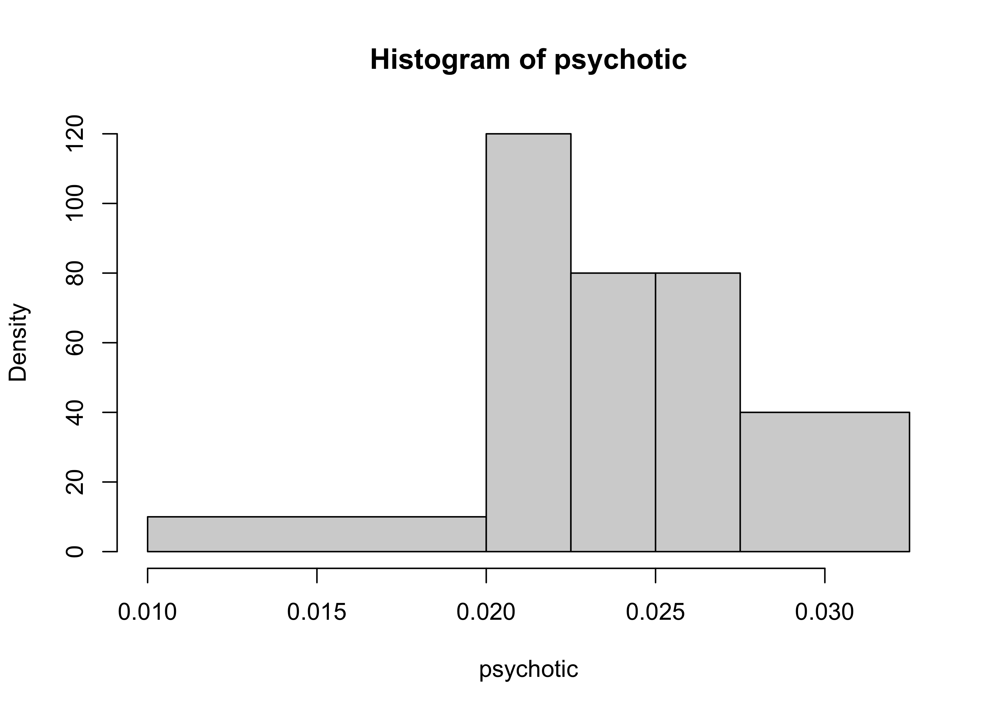
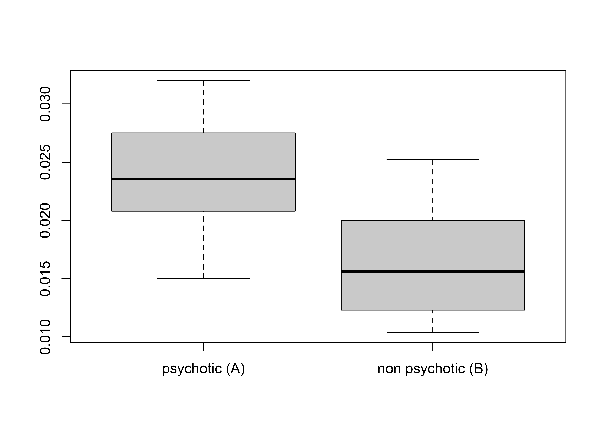
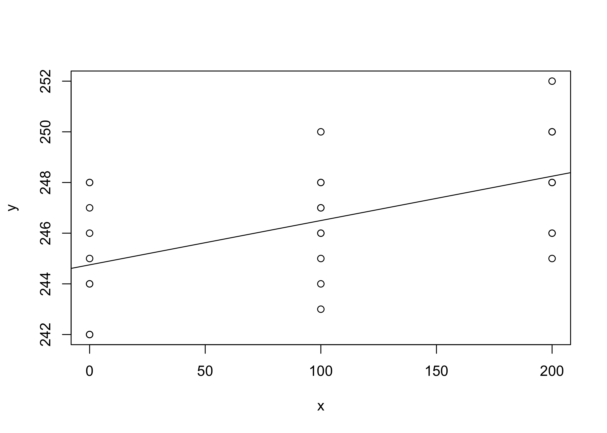

[1] 0.0150 0.0204 0.0208 0.0222 0.0226 0.0245 0.0270 0.0275 0.0306 0.0320Statistica I
Esame 21 Novembre 2022
Problema 1
Numerose teorie sulla causa della schizofrenia coinvolgono cambiamenti nell’attività di una sostanza chiamata dopamina nel sistema nervoso centrale. In questo studio, n = 25 pazienti schizofrenici sono stati trattati con farmaci antipsicotici e, dopo un certo periodo di tempo, sono stati classificati come psicotici o non-psicotici dal personale ospedaliero. Da ogni paziente sono stati prelevati campioni di liquido cerebrospinale di cui è stata misurata la dopamina b-idrossilata (un enzima). I dati sono riportati di seguito, misurati in nmol(ml)(h)/(mg) di proteina.
I medici sono interessati a capire se e quanto la dopamina differisce nei due gruppi di pazienti.
Pazienti giudicati psicotici (A):
Pazienti giudicati non-psicotici (B):
[1] 0.0104 0.0105 0.0112 0.0116 0.0130 0.0145 0.0154 0.0156 0.0170 0.0180
[11] 0.0200 0.0200 0.0210 0.0230 0.0252Si fornisca la definizione formale di funzione di ripartizione empirica e di quantile-p. Inoltre, si chiarisca qual è la relazione intercorrente tra questi concetti.
Si considerino i dati dei pazienti giudicati psicotici e le seguenti classi non equispaziate: (0.01, 0.02], (0.02, 0.0225], (0.0225, 0.025], (0.025, 0.0275], (0.0275, 0.0325]. Per queste classi, si calcolino frequenze assolute, frequenze relative e densità. Quindi, si disegni l’istogramma associato.
Sarebbe corretto disegnare un istogramma relativo ai pazienti giudicati psicotici utilizzando 15 classi equispaziate? Perchè?
Per entrambi i gruppi di pazienti, si identifichino media, mediana, primo e terzo quartile. Si confrontino quindi i boxplot corrispondenti (includendo eventuali valori anomali) e si commentino i risultati.
Senza fare riferimento ai dati sopra elencati, si dimostri che la media dei valori di dopamina per tutti gli n = 25 pazienti \bar{x} coincide con una media pesata delle medie aritmetiche di ciascun gruppo \bar{x}_A (pazienti psicotici) e \bar{x}_B (pazienti non-psicotici). Quindi, la si calcoli con i dati a disposizione.
Si proponga un indice adeguato per misurare se e quanto il livello di dopamina differisce tra i due gruppi di pazienti. Quindi, si commentino i risultati.
Schema della soluzione
| Frequenze assolute | Frequenze relative | Densità | |
|---|---|---|---|
| (0.01,0.02] | 1 | 0.1 | 100 |
| (0.02,0.0225] | 3 | 0.3 | 1200 |
| (0.0225,0.025] | 2 | 0.2 | 800 |
| (0.025,0.0275] | 2 | 0.2 | 800 |
| (0.0275,0.0325] | 2 | 0.2 | 400 |
Istogramma dei dati dei pazienti giudicati psicotici (A)

Statistiche descrittive
Media gruppo (A) Media gruppo (B) Mediana gruppo (A) Mediana gruppo (B)
[1,] 0.02426 0.01642666667 0.02355 0.0156Primo e terzo quartile dei pazienti giudicati psicotici (A)
25% 75%
0.0208 0.0275 Primo e terzo quartile dei pazienti giudicati non-psicotici (B)
25% 75%
0.0116 0.0200 Confronto tra i due boxplot:

Devianza entro i gruppi:
[1] 0.0005464733333Devianza tra i gruppi:
[1] 0.0003681666667Devianza totale
[1] 0.00091464Indice \eta^2
[1] 0.4025263127Problema 2
È stato condotto un esperimento per studiare l’effetto della caffeina sulle prestazioni in un semplice compito fisico. A trenta studenti universitari maschi è stato chiesto di picchiettare le dita sul tavolo. Sono stati poi divisi a caso in tre gruppi di 10, i quali hanno ricevuto dosi diverse di caffeina (0 ml, 100 ml e 200 ml). Due ore dopo il trattamento, ogni individuo è stato invitato a picchiettare le dita sul tavolo. Viene quindi registrato il numero di battiti al minuto.
I dati sono elencati nel seguito. La caffeina influisce sulle prestazioni in questo compito?
numero di battiti, 0 ml di caffeina (j=1):
[1] 242 245 244 248 247 248 242 244 246 242numero di battiti, 100 ml di caffeina (j=2):
[1] 248 246 245 247 248 250 247 246 243 244numero di battiti, 200 ml di caffeina (j=3):
[1] 246 248 250 252 248 250 246 248 245 250Siano y_{ij} ed x_{ij} i dati relativi al numero di battiti e i ml di caffeina, rispettivamente, per i = 1,\dots,10 e per le tre dosi di caffeina j=1,2,3. Pertanto, utilizzando questa notazione, i dati sopra elencati corrispondono ad esempio ai simboli y_{11} = 242 e y_{21} = 245; x_{11} = \dots = x_{10,1} = 0; x_{13} = \dots = x_{10,3} = 200.
Vengono inoltre riportate nel seguito alcune quantità di potenziale interesse:
\frac{1}{30}\sum_{j=1}^3\sum_{i=1}^{10} y_{ij} = 246.5, \quad \frac{1}{30}\sum_{j=1}^3\sum_{i=1}^{10} y_{ij}^2 = 60768.7666666667, \quad \frac{1}{30}\sum_{j=1}^3\sum_{i=1}^{10} x_{ij} y_{ij} = 24766.6666666667,
\frac{1}{30}\sum_{j=1}^3\sum_{i=1}^{10} x_{ij} = 100, \quad \frac{1}{30}\sum_{j=1}^3\sum_{i=1}^{10} x_{ij}^2 = 16666.6666666667.
Si disegni il diagramma a dispersione che mette in relazione la variabile
caffeina(x) con la variabilenumero di battiti(y).Si calcolino le varianze delle variabili
caffeinaenumero di battitie la loro correlazione.Si consideri il seguente modello di regressione lineare: y_{ij} = \alpha + \beta x_{ij} + \epsilon_{ij}, \qquad i=1,\dots,10, \quad j=1,\dots,3. Si ottengano delle stime per \alpha e \beta nel modo che si ritiene più opportuno.
Si disegni quindi la retta di regressione ottenuta al punto precedente nel grafico ottenuto al punto (a). Si fornisca quindi un’interpretazione per i coefficienti stimati. In particolare, la caffeina influisce sul comportamento di queste persone?
In base al modello stimato, se venisse somministrata una dose di 50ml di
caffeinaad un individuo, qual è ilnumero di battitiprevisto?Si ottenga l’indice di bontà di adattamento R^2 e lo si interpreti nel contesto del problema.
Schema della soluzione
Grafico a dispersione, con retta di regressione stimata

Media x Media y Varianza x Varianza y Covarianza xy Correlazione xy
[1,] 100 246.5 6666.666667 6.516666667 116.6666667 0.5597313934Coefficienti del modello di regressione stimati (\hat{\alpha},\hat{\beta}):
(Intercept) x
244.7500 0.0175 Previsione del numero di battiti quando x = 50
[1] 245.625Indice R^2
[1] 0.3132992327Problema 3
Si considerino le variabili caffeina e numero di battiti presentate nell’esercizio precedente, aventi media \bar{x} e \bar{y}, rispettivamente.
Si dimostri che \frac{1}{30}\sum_{j=1}^3\sum_{i=1}^{10}(y_{ij} - \bar{y})^2 \ge \frac{1}{30}\sum_{j=1}^3\sum_{i=1}^{10}(y_{ij} - \hat{\alpha} - \hat{\beta} x_{ij})^2, dove \hat{\alpha} e \hat{\beta} sono le stime ai minimi quadrati.
È inoltre possibile dimostrare che \frac{1}{30}\sum_{j=1}^3\sum_{i=1}^{10}(y_{ij} - \hat{\alpha} - \hat{\beta} x_{ij})^2 \ge \frac{1}{30}\sum_{j=1}^3\sum_{i=1}^{10}(y_{ij} - \bar{y}_j)^2, dove \bar{y}_j per j=1, 2 ,3, rappresentano la medie aritmetiche del
numero di battitiper ciascun dosaggio di caffeina. Si fornisca un’interpretazione per questa disuguaglianza e la si usi per dimostrare che vale la seguente relazione \eta^2 \ge R^2, dove \eta^2 rappresenta il rapporto di correlazione.(Per la lode). Si dimostri la disuguaglianza precedente.